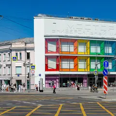
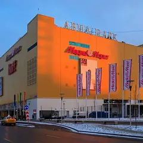

Места по типу · данные на 15 октября
Караоке в Москве
28 мест с караоке — отдельные комнаты для компании, караоке-бары и рестораны со сценой, например «Краснопресненские бани», «Раковарня» и «Сокровища Фараона». Для девичника, дня рождения или вечера с друзьями, а в планах ниже — где поужинать до этого.
- 28 мест
- 31 план
- 8 округов
Где спеть 28

Столярный пер., 7, стр. 1
Финская сауна, турецкий хамам, бассейн с подсветкой и даже караоке.
Подробнее и маршрут: Краснопресненские баниПозвать сюда: Краснопресненские бани
Фото: Никонико962, CC BY-SA 4.0 · Wikimedia Commons
Рочдельская ул., 15, стр. 30
Раки, морепродукты и караоке до шести утра на Трёхгорке.
Подробнее и маршрут: РаковарняПозвать сюда: Раковарня
Фото: Ludvig14, CC BY-SA 4.0 · Wikimedia Commons
Зеленодольская ул., 30, корп. 3
Новое
Большой боулинг у «Кузьминок»: 16 дорожек, бильярд и караоке, вкусная кухня. Дорожка — 1 380–3 180 ₽/ч, в пятницу и субботу открыто до 5 утра. Бронируйте заранее.
Подробнее и маршрут: Сокровища ФараонаПозвать сюда: Сокровища Фараона
Сиреневый бул., 23А
Новое
Кальянная с караоке на Сиреневом бульваре у Щёлковской: русские и зарубежные хиты, VIP-комната, летом терраса. В пт–сб до 6 утра, в остальные дни до 5.
Подробнее и маршрут: Gallery LoungeПозвать сюда: Gallery Lounge
ул. Маросейка, 15
Новое
Караоке-клуб в подвальчике на Маросейке у Китай-города: общий зал, VIP-комната и пакет для девичника. Работает до 5–6 утра.
Подробнее и маршрут: Белая стрекозаПозвать сюда: Белая стрекоза
Пятницкая ул., 30, стр. 1
Новое
Советская рюмочная в духе 80-х: с вс по чт «народное караоке» с ведущим, в пт–сб дискотека с хоровым пением, по вт и ср — стендап. Настойки, закуски, до 6 утра.
3-й пр. Перова Поля, 8
КруглосуточноНовое
Шесть бревенчатых срубов на компанию до 8, 12 или 30 человек: парная на дровах, караоке, бильярд и приставки. Круглосуточно, от 5 000 ₽ в час.
Подробнее и маршрут: Перовские баниПозвать сюда: Перовские бани
Волочаевская ул., 25/1
Новое
Приватное кино: тематический зал с большим диваном только для вас, свой фильм, караоке и приставка, еду можно заказать. Работает до шести утра.
Волоколамское ш., 89, корп. 1
КруглосуточноНовое
Большие срубы на 12–15 гостей: парная на дровах, свой бассейн, караоке и бильярд, а во дворике одного — дубовая бочка. Работает круглосуточно.
Ленинградский просп., 47, стр. 2
Новое
Караоке у «Аэропорта»: общий зал и три закрытые кабинки на 6, 10 и 15 человек — поёте только своей компанией. Кабинка от 1500 ₽/час, открыто с 17:00 до 6 утра.
Автозаводская ул., 18 (ТРЦ «Ривьера»)
Новое
Гастропаб с 18 дорожками в ТРЦ «Ривьера»: снукер, пул, русский бильярд и караоке. Дорожка — 1 300–3 000 ₽/ч, есть подземная парковка. Пт–вс до полуночи.
Подробнее и маршрут: Ballers StreetПозвать сюда: Ballers Street
Большой Саввинский пер., 12, стр. 10Г
Новое
Караоке Эмина Агаларова в «Московском шёлке»: сцена с акустикой Meyer Sound, резидентки-вокалистки и шоу между песнями. Девичник с размахом, до 6 утра.
Кутузовский просп., 2/1, стр. 6
Новое
Премиальное караоке у Киевской: сцена, бэк-вокалистки и звукорежиссёр, который подстроит микрофон. С вс по чт без депозита, в выходные — бронь стола. 20:00–6:00.
ул. Большая Полянка, 1/3
Новое
Караоке Тимура Ланского в одном здании с «Чайхоной №1» на Полянке: акустика Nexo, барабаны, бэк-вокал, в пятницу живая группа. Чт–сб с 20:00, в четверг без депозита.
Митинская ул., 16
Новое
Караоке-клуб в Митино: диджей, кухня и звукорежиссёр, который выставит микрофон даже новичку. Можно спеть на северо-западе, не выезжая в центр. До 6 утра.
Пятницкая ул., 66, стр. 2
Новое
Бар в особняке на Пятницкой: 14-метровая стойка, танцпол со сценой и отдельная караоке-комната для своей компании. Тематические вечеринки, открыт до 6 утра.
ул. Новый Арбат, 17
Новое
Караоке-подвал на Новом Арбате: кожаные диваны, сцена, больше 60 тысяч песен, диджей подстраивает звук под каждого. С пн по чт без депозита, с 20:00 до 5 утра.
Страстной бул., 8А
Ночной клуб с караоке, диджеями и шоу на Страстном бульваре.
Химки, Совхозная ул., 6
Лаунж с караоке, в выходные открыт до 2–4 ночи. Вариант для компании, когда расходиться ещё рано.
Подробнее и маршрут: Мята Lounge ЛевобережныйПозвать сюда: Мята Lounge Левобережный
Саввинская наб., 12, стр. 8
Караоке с профессиональным звуком — поют каждый вечер, хоть в понедельник.
ул. Кузнецкий Мост, 3, стр. 2
Шумный караоке-бар певицы Anna Asti с шоу и диджеями.
Подробнее и маршрут: Сплетни by Anna AstiПозвать сюда: Сплетни by Anna Asti
Новослободская ул., 20, стр. 6
Новое
Восемь отдельных комнат с караоке у Новослободской, в некоторых — PlayStation, Xbox Kinect и настолки. Платите по часам без депозита, еду и напитки можно принести свои.
Подробнее и маршрут: Friends Hall «Харизма»Позвать сюда: Friends Hall «Харизма»
ул. 1905 года, 2
Отдельные караоке-комнаты на 1–16 человек со встроенным корейским грилем.
Лубянский пр., 15, стр. 2
Новое
Караоке с многолетней историей у Китай-города: зал со сценой, бэк-вокалисты и сильный звук, отдельный бар и VIP-зона. Депозит от 5000 ₽ с гостя, 18+, с 20:00 до 6 утра.
ул. Большая Серпуховская, 23
Три этажа рамена, концертов и тематических караоке- и игровых комнат. 12–00.
Большая Лубянка, 24/15, стр. 1
Спорт-бар с трибуной для матчей, большим выбором пенного и караоке.
Большая Садовая ул., 14, стр. 10
Караоке-бар на Садовом, в двух шагах от студии танцев.
Подробнее и маршрут: Karaoke LightsПозвать сюда: Karaoke Lights
Цветной бул., 26/1
Караоке с танцполом и кухней в центре.

Готовые планы с этими местами 12 из 31
- Краснопресненские бани · Баня и хамам · м. Улица 1905 года
- 13 минут пешкомРаковарня · Раки и караоке
Финская сауна, хамам и бассейн в Краснопресненских банях, а потом через Трёхгорку в «Раковарню» — раки, морепродукты и караоке до шести утра.
Открыть план: Баня на Пресне и ракиПозвать сюда: Баня на Пресне и раки
Фото: Никонико962, CC BY-SA 4.0 · Wikimedia Commons
- ГЭС-2 · Дом культуры · м. Кропоткинская
- 4 минуты пешкомKaraoke Pro · Караоке-клуб
Бесплатные выставки ГЭС-2, а потом через дорогу Karaoke Pro: акустика Nexo, барабаны и бэк-вокал, в пятницу — живая группа. Открыто с четверга по субботу с 20:00.
Открыть план: ГЭС-2 и караоке с живой группойПозвать сюда: ГЭС-2 и караоке с живой группой
Фото: Юрий Д.К., CC BY 4.0 · Wikimedia Commons

- Mega Ice в «Авиапарке» · Крытый каток · м. ЦСКА
- 1 минута пешкомLali · Узбекский ресторан
- 19 минут пешкомТрели · Караоке с кабинками
Покататься на крытом катке «Авиапарка», поужинать в Lali там же, а потом закрыться в своей кабинке караоке «Трели» у «Аэропорта» — поют до 6 утра.
Открыть план: Лёд, плов и своя караоке-кабинкаПозвать сюда: Лёд, плов и своя караоке-кабинка
Фото: A.Savin, Free Art License · Wikimedia Commons
- Андроников монастырь · Музей и монастырь · м. Площадь Ильича
- 6 минут пешкомСекрет · Приватный кинотеатр
Прогулка вокруг белых стен Андроникова монастыря, а потом приватный кинотеатр «Секрет»: свой зал с большим диваном, любой фильм и работа до шести утра.
Открыть план: Монастырь и кинозал только для васПозвать сюда: Монастырь и кинозал только для вас
Фото: A.Savin, Free Art License · Wikimedia Commons
- Каро 11 Октябрь · Кинотеатр · IMAX · м. Смоленская
- 4 минуты пешкомSoprano · Караоке-бар
Поздний сеанс в «Октябре» — последние начинаются ближе к двум ночи, — а в паре минут караоке Soprano с кожаными диванами, где поют до 5 утра.
Открыть план: Ночной сеанс и караоке на Новом АрбатеПозвать сюда: Ночной сеанс и караоке на Новом Арбате
Фото: Svetlov Artem, CC BY-SA 4.0 · Wikimedia Commons
- Ландшафтный парк «Митино» · Парк · м. Волоколамская
- 13 минут пешкомLuna · Караоке-клуб
Круг вокруг пруда в ландшафтном парке «Митино», а потом караоке Luna: диджей, кухня и звукорежиссёр, который выставит микрофон даже новичку.
Открыть план: Парк «Митино» и караоке рядомПозвать сюда: Парк «Митино» и караоке рядом
Фото: AVRS, CC BY-SA 3.0 · Wikimedia Commons
- Пятницкая улица · Улица · м. Новокузнецкая
- 5 минут пешкомЕвгенич · Караоке-рюмочная
Пройтись по вечерней Пятницкой мимо купеческих домов, а потом в рюмочную «Евгенич» в духе 80-х: караоке с ведущим, хоровое пение и настойки до 6 утра.
Открыть план: Пятницкая и народное караокеПозвать сюда: Пятницкая и народное караоке
Фото: Retired electrician, CC0 · Wikimedia Commons
- Краснопресненские бани · Баня и хамам · м. Улица 1905 года
- 18 минут пешкомHite · Корейский ресторан и караоке
Хамам и бассейн, а после — своя караоке-комната с грилем.
Открыть план: Баня, потом караокеПозвать сюда: Баня, потом караоке
Фото: Никонико962, CC BY-SA 4.0 · Wikimedia Commons
- Краснопресненские бани · Баня и хамам · м. Улица 1905 года
- 3 минуты пешкомДжон Булл Паб · Паб
Финская сауна, хамам и бассейн с подсветкой в Краснопресненских банях, а через три минуты — пинта в английском пабе с тридцатилетней историей.
Открыть план: Пар и паб на ПреснеПозвать сюда: Пар и паб на Пресне
Фото: Никонико962, CC BY-SA 4.0 · Wikimedia Commons
- Anvio VR · VR-арена · м. Лубянка
- 12 минут пешкомЛига Пап · Спорт-бар
Командная VR-заруба, а потом спорт-бар на трибуне.
Открыть план: VR-рубилово и матчПозвать сюда: VR-рубилово и матч
Фото: A.Savin, CC BY-SA 3.0 · Wikimedia Commons
- Матрёшка · Ресторан русской кухни · м. Киевская
- 1 минута пешкомGrammy's · Караоке-клуб
Русская кухня в «Матрёшке» у высотки «Украина», а рядом Grammy’s: бэк-вокалистки, звукорежиссёр подстроит микрофон, а с воскресенья по четверг — без депозита.
Открыть план: Борщ у «Украины» и премиальное караокеПозвать сюда: Борщ у «Украины» и премиальное караоке
- Губернская сцена МХАТ им. Горького · Театр · м. Кузьминки
- 6 минут пешкомСокровища Фараона · Боулинг и бильярд
Спектакль на Губернской сцене МХАТ у «Кузьминок», а потом пять минут до боулинга «Сокровища Фараона» — в пятницу и субботу он открыт до 5 утра.
Открыть план: Губернская сцена и боулингПозвать сюда: Губернская сцена и боулинг


Как позвать
- Выбери план, место или событие — в карточке адрес, цены и маршрут в Яндекс Картах.
- Нажми «Позвать сюда» — соберётся приглашение-игра для свидания или голосование для компании.
- Отправь ссылку в любой мессенджер: тебе ответят, а компания отметит, куда и когда может. Бесплатно и без регистрации.